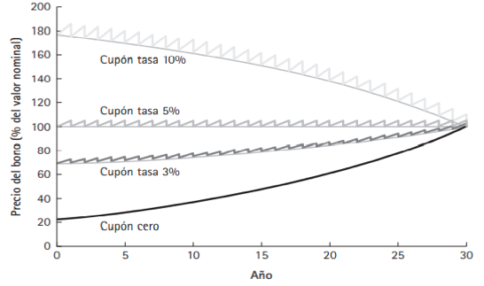

6 Valuación de Bonos
6.1 Precios de los bonos inmediatamente después del pago de un cupón
| Cuando precio bono es… | \(>\) valor nominal | \(=\) valor nominal | \(<\) valor nominal |
|---|---|---|---|
| El bono se negocia | por arriba de par o con premio | a la par | por debajo de la par o con descuento |
| Esto ocurre cuando | Tasa del cupón > Rendimiento al vencimiento | Tasa del cupón = Rendimiento al vencimiento | Tasa del cupó < Rendimiento del vencimiento |
6.2 Determinación del descuento o premio de un bono
Considere tres bonos a 30 años con pagos anuales de cupón. Un bono tiene una tasa cupón de 10%, otro de 5% y el último de 3%. Si el rendimiento al vencimiento de los tres bonos es de 5%. ¿Cuál es el precio de cada uno para un valor nominal de $100? ¿Cuál bono se comercia con premio,cual con descuento y cual a la par?
\[\mbox{Solución}\]
\(P(cupon~10\%) = 10\times \frac{1}{0.05}\left(\begin{array}{c}1 - \frac{1}{1.05^{30}}\end{array}\right) + \frac{100}{1.05^{30}} = \$176.86\) (se negocia con premio)
\(P(cupon~5\%) = 5\times\frac{1}{0.05}\left(\begin{array}{c}1 - \frac{1}{1.05^{30}}\end{array}\right) + \frac{100}{1.05^{30}} = \$100.00\) (se negocia a la par)
\(P(cupon~3\%) = 3 \times \frac{1}{0.05}\left(\begin{array}{c}1 - \frac{1}{1.05^{30}}\end{array}\right) + \frac{100}{1.05^{30}} = \$69.26\) (se negocia con descuento)
6.3 Efecto del tiempo sobre los precios de los bonos

La gráfica ilustra los efectos del paso del tiempo sobre los precios de los bonos cuando el rendimiento permanece constante.
El precio de un bono cupón cero se eleva despacio.
El precio de bono cuponado también aumenta entre los pagos de un cupón pero se derrumba en la fecha en que se paga uno, lo que refleja la cantidad del pago.
Por cada cupón del bono, la línea gris continua (junto a las líneas dentadas) representa la tendencia del precio del bono justo después de que se paga cada cupón.
6.4 La sensibilidad de los bonos a la tasa de interés
Consideremos el siguiente problema:
Considere un bono cupón cero a 15 años y un bono cuponado a 30 años con cupones del 10% anual. ¿En qué porcentaje cambia el precio de cada uno si su rendimiento al vencimiento aumenta de 5% a 6%?
\[\mbox{Solución}\]
En primer lugar se calcula el precio de cada bono para cada rendimiento al vencimiento:
| Rendimiento al vencimiento | Bono cupón cero, a 15 años | Bono cupón al 10% anual, a 30 años |
|---|---|---|
| 5% | \(\frac{100}{1.05^{15}} = \$48.10\) | \(10\times \frac{1}{0.05}\left(\begin{array}{c}1 - \frac{1}{1.05^{30}}\end{array}\right) + \frac{100}{1.05^{30}} = \$176.86\) |
| 6% | \(\frac{100}{1.06^{15}} = \$41.73\) | \(10\times \frac{1}{0.06}\left(\begin{array}{c}1 - \frac{1}{1.06^{30}}\end{array}\right) + \frac{100}{1.06^{30}} = \$155.06\) |
El precio del bono cuponado a 15 años cambia en \[\frac{41.73 - 48.10}{48.10} = -13.2\%\] si su rendimiento al vencimiento se incrementa de 5% a 6%.
Para el bono a 30 años con cupones del 10% anual, el cambio en el precio es \[\frac{155.06 - 176.86}{176.86} = -12.3\]
6.5 Rendimientos y precios (para un bono nominal de $1000) de bonos cupón cero
| Vencimiento | 1 año | 2 años | 3 años | 4 años |
|---|---|---|---|---|
| RAV | 3.50% | 4.00% | 4.50% | 4.75% |
| Precio | $96.62 | $92.45 | $87.63 | $83.06 |
Para ilustrarlo, en la siguiente tabla se muestran los rendimientos y precios de un bono cupón cero actua. Se calcula el costo del portafolio del bono cupón cero que replica al bono cupón a tres años, como sigue:
| Bono cupón cero | Valor nominal requerido | Costo |
|---|---|---|
| 1 año | 100 | 96.62 |
| 2 años | 100 | 92.45 |
| 3 años | 1100 | 11 x 87.63 = 963.93 |
| costo total = $1153.00 |
6.6 Rendimientos para vencimientos diferentes
Suponga que los siguientes bonos cupón cero se comercian a los precios que se indican a continuación, por un valor nominal de $100. Determine el rendimiento al vencimiento que corresponde a cada bono.
| vencimiento | 1 año | 2 años | 3 años | 4 años |
|---|---|---|---|---|
| Precio | $96.62 | $92.45 | $87.63 | $83.06 |
\[\mbox{Solución}\]
\[ \begin{eqnarray*} RAV_{1} &=& \left(\begin{array}{c}\frac{100}{96.62}\end{array}\right) -1 = 3.5\%\\[0.3cm] RAV_{2} &=& \left(\begin{array}{c}\frac{100}{92.45}\end{array}\right)^{1/2} - 1 = 4.00\%\\[0.3cm] RAV_{3} &=& \left(\begin{array}{c}\frac{100}{87.03}\end{array}\right)^{1/3} - 1 = 4.50\%\\[0.3cm] RAV_{4} &=& \left(\begin{array}{c}\frac{100}{83.06}\end{array}\right)^{1/4} - 1 = 4.75\% \end{eqnarray*} \]
6.7 Calificaciones de los bonos
| Moody’s | Standard & Poor’s | Descripción |
|---|---|---|
| Aaa | AAA | Se juzga como los de mejor calidad. Tienen el grado de riesgo más bajo de riesgo de inversión. |
| Aa | AA | Son de alta calidad según todos los estándare. Se les conoce como bonos de alto grado |
| A | A | Poseen muchos atributos favorables a la inversión y se consideran como obligaciones de grado superior a medio |
| Baa | BBB | Se consideran obligaciones de grado medio (es decir, no están ni muy protegidos ni tal mal asegurados) |
| Bonos especulativos | ||
| Ba | BB | Se guzga que tienen elementos especulativos: no se considera que este bien asegurado su futuro. A los bonos de esta clase se les considera como bonos de una posición incierta |
| B | B | Por lo general no tienen caracteristicas deseables de inversión. Es poca la seguridad de los pagos de interés y principal para el mantenimiento de otros términos del contrato para un periodo largo de tiempo. |
| Caa | CCC | Son de mal desempeño. Estas emisiones estan en incumplimiento o presentan elementos de peligro con respecto del principal o el interés |
| Ca | CC | Son especulativos en alto grado. Con frecuencia, tales emisiones están en incumplimiento o tienen otras deficiencias marcadas |
| C | C,D | Son los bonos de la clase más baja |